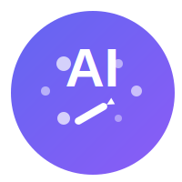

⚙️ API设置
小牛翻译API设置
请输入您的小牛翻译API密钥。API密钥将安全地存储在您的浏览器中，不会上传到服务器。
API密钥
🗑️ 清除密钥
不设置API
保存

AI艺术工坊
v3.0
按Enter快速生成
画质增强标签（点击选择，建议2-3个）
艺术杰作
最佳质量
高分辨率
超精细细节
8K超高清
专业光效
电影光效
戏剧光效
工作室光效
柔和光效
负面提示词（告诉AI不要生成什么）
低质量, 模糊, 变形, 扭曲, 低分辨率, 草图, 不完整, 水印
图片尺寸 (分辨率)
1024x1024 (1:1 正方形)
1280x720 (16:9 横屏 HD)
1920x1080 (16:9 横屏 Full HD)
720x1280 (9:16 竖屏 HD)
1080x1920 (9:16 竖屏 Full HD)
生成数量
生成 1 张
生成 2 张
生成 4 张
高级参数设置
采样步数
采样步数决定AI生成图像的精细程度。步数越高，图像细节越丰富，但生成时间也越长。推荐值：30-70。
50
CFG Scale
CFG Scale控制AI对提示词的遵循程度。值越高，图像越符合提示词描述，但创意性可能降低；值越低，创意性越强但可能偏离提示词。推荐值：7-9。
7
随机种子
种子值决定图像的初始随机状态。使用相同的种子值和参数可以生成相似的图像。留空则每次生成随机种子。记录喜欢的图像的种子值可以帮助您重现类似效果。
采样方法
不同的采样方法会产生不同风格的图像。Euler a适合创意性强的图像；DDIM生成更稳定可控的结果；DPM++生成细节丰富的高质量图像。
Euler a (创意性强)
DDIM (稳定可控)
DPM++ (细节丰富)
k_LMS (平衡型)
噪声强度
噪声强度影响图像的随机性和纹理。较高的值会产生更多的纹理细节和随机性，较低的值则产生更平滑的结果。
0.2
风格强度
风格强度控制AI应用艺术风格的程度。较高的值会使风格特征更明显，较低的值则更接近写实。
0.6
🎨 生成图片
✨ 灵感库
Admin Panel
Login
Sitemap
Do Not Follow
关键词图像生成器
密钥设置
提示词输入